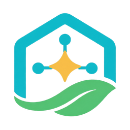

家庭场景与 Agent 协作
妈妈到家偏好 · 柔和灯光
客厅灯光可调整当前无人观影或阅读
主 Agent核对家庭状态
→
体验 Agent确定舒适目标
→
空间执行 Agent映射可执行动作
45%
客厅灯亮度 · 窗帘开度空调目标 25°C，三项动作等待妈妈确认。

LivingMindactions.extend([("living-light", pref["arrivalLight"]), ("living-curtain", 45)])actions.append(("living-ac", pref["arrivalTemp"]))若家人已在客厅观影或阅读，这条规则保留共享灯光和窗帘设置。
客厅灯 45%、窗帘 45%、空调 25°C
今晚只调亮客厅灯，保留其他设备。
以当前建议编号下发客厅灯动作。
if decision == "edit":
self.edit(suggestion, data)
return
if decision == "confirm":edit 更新待确认建议。confirm 遍历确认后的动作并调用虚拟网关。
observed = read_reply.get("value")
if not supports_value(device["capability"], observed):
return "unknown", None
return ("confirmed" if observed == expected else "mismatch"), observed同时核对写入和读取回包中的 did、siid、piid，再比较设备读数。